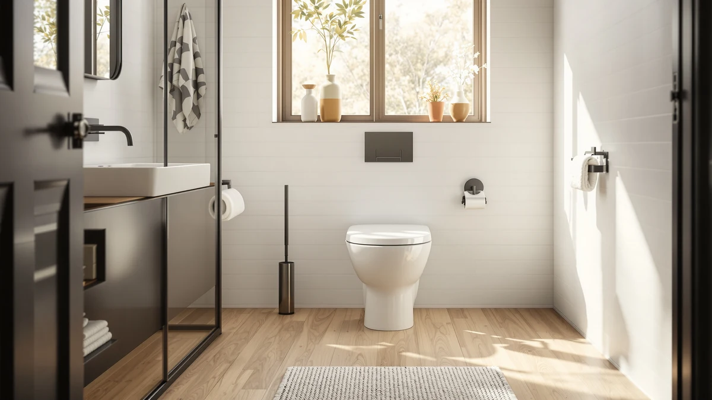

WOODBRIDGE T 0018/B 0735 Review (2026): Worth It?
Prices and picks verified as of October 2026. Independent, reader-supported reviews.


Quick Answer
This WOODBRIDGE T-0018/B-0735 review finds that the $323.47 dual flush, elongated one-piece toilet is a reasonable pick if you specifically want Woodbridge's two-button flush system, but it costs $14 to $18 more than three comparable one-piece toilets covered on this site. If price matters more than the Woodbridge name, the alternatives below are worth a look first.
Our pick: WOODBRIDGE T-0018/B-0735 Dual Flush Elongated, $323.47 Check Price on Amazon
Bottom line: our top pick is the WOODBRIDGE T-0018/B-0735 Dual Flush Elongated One Piece Soft at $325.43.
Things to Know Before You Buy
- Woodbridge prices the T-0018/B-0735 at $323.47, the highest of the four one-piece toilets in this WOODBRIDGE T-0018/B-0735 review.
- The T-0018/B-0735 uses a dual flush system, giving you a separate button for liquid and solid waste to cut water use.
- The St. Tropez One Piece Elongated from Swiss Madison costs $306.25, the closest alternative in this comparison at $17.22 less.
- The WOODBRIDGEE One Piece Toilet ($305.27) and the DeerValley Elongated One Piece Toilet ($309.00) both undercut the T-0018/B-0735 by more than $14.
This WOODBRIDGE T-0018/B-0735 review looks at whether Woodbridge's $323.47 dual flush, elongated one-piece toilet earns its place next to three lower-priced alternatives covered on this site. Woodbridge builds the T-0018/B-0735 around a two-button dual flush system set inside a one-piece elongated bowl, and prices it above every other model in this comparison. We pulled together Woodbridge's own product listing, including the four images it publishes of the toilet from different angles, and set it beside the St. Tropez One Piece Elongated, the WOODBRIDGEE One Piece Toilet, and the DeerValley Elongated One Piece Toilet, three models that cover the same general one-piece category for less money.
The short version: if you specifically want a dual flush system built into a one-piece elongated bowl and don't mind paying a bit more for it, the WOODBRIDGE T-0018/B-0735 is worth considering. But it costs $17.22 more than the St. Tropez One Piece Elongated, the closest alternative in this group, and over $14 more than either the WOODBRIDGEE or the DeerValley. Pick the Woodbridge if the dual flush mechanism itself is the deciding factor. Pick one of the three alternatives below if price matters more than that specific flush system.
Why You Should Trust Us
Ilane Tall has spent more than ten years researching bathroom fixtures, including one-piece and dual flush toilets, for Best One Piece Toilets. She built this WOODBRIDGE T-0018/B-0735 review by comparing Woodbridge's own published listing against the closest competitors on price and category, the same side-by-side process this site uses for every review. We do not accept payment from Woodbridge, Swiss Madison, or DeerValley to influence placement, and our Amazon links earn a commission only if you buy, which does not change what we recommend.
Our Research Experience
For this WOODBRIDGE T-0018/B-0735 review, we started with Woodbridge's own product listing: the four photos of the toilet from multiple angles, the dual flush mechanism, and the $323.47 price. We then lined up the T-0018/B-0735 against every other one-piece elongated toilet already covered on Best One Piece Toilets, narrowing the field to the St. Tropez One Piece Elongated, the WOODBRIDGEE One Piece Toilet, and the DeerValley Elongated One Piece Toilet, three models that span a tight $18 price band beneath Woodbridge's asking price. None of the four listings we pulled has built up a public review count, so we weighted our evaluation toward the facts we could verify: published price, flush technology, and bowl shape, rather than guessing at long-term durability we cannot confirm firsthand. That gap is also why we lay out each toilet's documented price and feature set side by side instead of ranking them on star counts that don't exist yet, and it's a limitation worth keeping in mind as you read the rest of this WOODBRIDGE T-0018/B-0735 review.
Overview & Specs

WOODBRIDGE T-0018/B-0735 Dual Flush Elongated
What we like
- Builds a dual flush system into the toilet, giving you separate buttons for liquid and solid waste to help cut water use
- Comes in a one-piece elongated design, which means no seam between tank and bowl to trap grime, and a bowl shape built for comfier seating
- Woodbridge publishes four images of the toilet from multiple angles, giving you a fuller visual sense of the design before you buy
Flaws but not dealbreakers
- Priced $17.22 higher than the St. Tropez One Piece Elongated, the next closest model in this WOODBRIDGE T-0018/B-0735 review
- No public rating or review count on the listing we pulled, so you're relying on Woodbridge's own description rather than verified buyer feedback
- At $323.47, it costs more than every other one-piece toilet in this four-way comparison, with no spec difference obvious enough to fully explain the gap
| Material | — |
| Size | — |
Woodbridge builds the T-0018/B-0735 around a dual flush system, splitting the single flush lever most one-piece toilets use into two buttons, one sized for liquid waste and one for solid waste. That two-button approach is the main reason to consider the T-0018/B-0735 over the toilet-only alternatives further down this WOODBRIDGE T-0018/B-0735 review, since you're paying for a water-saving mechanism rather than a single flush volume that treats every trip to the bathroom the same way. The elongated bowl and one-piece construction follow the same format as the rest of this comparison, with no seam between tank and bowl for grime to collect in.
At $323.47, the T-0018/B-0735 sits above the other three toilets in this comparison, and that gap is the central trade-off you need to weigh before you buy. The St. Tropez One Piece Elongated, the closest alternative by price, costs $17.22 less at $306.25, while the WOODBRIDGEE One Piece Toilet and the DeerValley Elongated One Piece Toilet both come in under $310. None of the four listings we pulled has built up a public review count yet, so the decision comes down to how much you value the dual flush mechanism itself versus the price you pay to get it.
What We Liked
The clearest advantage in this WOODBRIDGE T-0018/B-0735 review is the dual flush system itself. Instead of buying a one-piece toilet with a single flush volume, the T-0018/B-0735 gives you two buttons, one for liquid waste and one for solid waste, a mechanism built to use less water on the lighter of the two jobs. Woodbridge pairs that with an elongated bowl and one-piece construction, the same comfort-focused shape the other three toilets in this comparison also use, so you're not giving up bowl shape to get the dual flush feature. Woodbridge also documents the toilet with four images from different angles, more visual coverage than a bare product photo offers, and that helps you judge the tank and button layout before you commit $323.47 to it. For buyers who have already decided a dual flush mechanism matters more than saving $15 to $18, that combination justifies the premium Woodbridge charges for it.
What Could Be Better
The biggest drawback in this WOODBRIDGE T-0018/B-0735 review is price relative to the field. At $323.47, the T-0018/B-0735 costs $17.22 more than the St. Tropez One Piece Elongated, the closest alternative by price, and over $14 more than either the WOODBRIDGEE One Piece Toilet or the DeerValley Elongated One Piece Toilet. Woodbridge also has not accumulated a public rating or review count on the listing we pulled, so we can't confirm long-term flush performance or durability beyond what the product description states. That missing track record is worth weighing alongside the price gap itself, since you're paying more for a mechanism we can describe but not verify against real owner feedback yet.
Who Is It For?
The WOODBRIDGE T-0018/B-0735 fits buyers who have already decided they want a dual flush system and are comfortable paying a bit more to get it from Woodbridge specifically. Anyone replacing an older single-flush toilet and prioritizing water savings over sticker price will find it a reasonable match too. Shopping mainly on price? The St. Tropez One Piece Elongated in this WOODBRIDGE T-0018/B-0735 review covers the same elongated one-piece category for $17.22 less. And if brand name matters less to you than raw price, the WOODBRIDGEE and the DeerValley both undercut the Woodbridge by more than $14.
Alternatives to Consider
If the $323.47 price gives you pause, these three toilets cover similar ground to the T-0018/B-0735 for meaningfully less money, and each is worth a look in this WOODBRIDGE T-0018/B-0735 review.

Editor's Pick
St. Tropez One Piece Elongated
The St. Tropez One Piece Elongated from Swiss Madison matches the T-0018/B-0735's elongated, one-piece format but costs $17.22 less at $306.25. It's the closest direct alternative to the Woodbridge in this comparison if you want the same bowl shape without paying for the dual flush mechanism.
$306.25
Check Price on Amazon
Best Value
WOODBRIDGEE One Piece Toilet with
The WOODBRIDGEE One Piece Toilet prices in at $305.27, the lowest of the four models in this WOODBRIDGE T-0018/B-0735 review. It shares the Woodbridge name but skips the dual flush mechanism, making it worth a look if price matters more than the two-button flush system.
$305.27
Check Price on Amazon
Premium Choice
DeerValley Elongated One Piece Toilet
The DeerValley Elongated One Piece Toilet rounds out this comparison at $309.00, still $14.47 under the Woodbridge's asking price. It's worth considering if you want an elongated one-piece bowl from a different brand without paying for the T-0018/B-0735's dual flush feature.
$309.00
Check Price on AmazonFrequently Asked Questions
Is the WOODBRIDGE T-0018/B-0735 worth $323.47?
It's worth $323.47 if you specifically want a dual flush, two-button system built into a one-piece elongated toilet rather than a single-flush model. If price matters more than that specific mechanism, the St. Tropez One Piece Elongated in this WOODBRIDGE T-0018/B-0735 review saves you $17.22 at $306.25.
How does the WOODBRIDGE T-0018/B-0735 compare to the St. Tropez One Piece Elongated?
Both the T-0018/B-0735 and the St. Tropez One Piece Elongated use a one-piece elongated bowl, but the Woodbridge adds a dual flush system and costs $17.22 more at $323.47 versus the St. Tropez's $306.25. Neither listing we pulled has built up a public review count yet, so the decision comes down to the flush mechanism and price rather than verified performance.
Do you need a dual flush toilet like the WOODBRIDGE T-0018/B-0735, or will a standard one-piece toilet work?
If you want a separate flush setting for liquid and solid waste to cut water use, a dual flush toilet like the T-0018/B-0735 makes sense. If you don't need that feature, the WOODBRIDGEE One Piece Toilet in this WOODBRIDGE T-0018/B-0735 review covers a standard one-piece toilet for $305.27, about $18 less than the Woodbridge.
Final Verdict
This WOODBRIDGE T-0018/B-0735 review comes down to a straightforward trade-off. Woodbridge's T-0018/B-0735 delivers a dual flush, two-button system built into a one-piece elongated bowl, at $323.47, the highest price among the four models we compared, and without the public review history that would let us confirm long-term flush performance firsthand. If you want that dual flush mechanism specifically and price is not the deciding factor, the T-0018/B-0735 is a reasonable buy at that price. If you'd rather save $14 to $18 or don't need a dual flush system specifically, the St. Tropez, WOODBRIDGEE, and DeerValley alternatives above are worth a look.